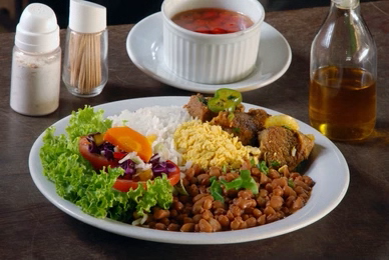
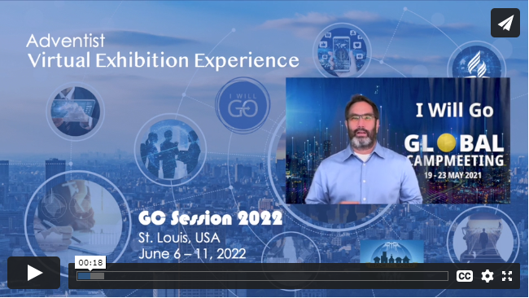

Próximos Eventos
Anímate y Participa
Santa Cena Iglesia
Sábado: 16 de Abril

Sesión XX de la SEC
Sábado: 23, domingo 24 Abril

Tarde de Temas Juveniles
Hablemos sobre asuntos actuales
Sábado 30 de Abril Comedor
Mes Festejando las Madres
Todo el mes de MayoCelebrándolo en grande

Musical dedicado a las Madres
Departamento de MúsicaSábado 6 de Mayo

Almuerzo dedicado a las Madres
Escuela Sabática AuspiciaSábado 14 de Mayo
Día de Celebración Juvenil
Predicador Joven InvitadoSábado 4 de Junio


Congreso Mundial Adventista
Sólo para DelegadosJunio 6 al 11 / 2022
Almuerzo dedicado a los Padres
Escuela Sabática AuspiciaSábado 18 de Junio

Calendario Escuela Sabática
Dir: Denia Roche
Abril - Mayo - Junio
Abril 2022
Sábado 16 -- Reyna Alvarez
Sábado 23 -- Silvia Peláez (Visita Iglesia Tampa Norte)
Sábado 30 -- Elsa Lastra
Mayo 2022
Sabado 7 -- Marelys Díaz
Sábado 14 -- Denia Roche
Sabado 21 -- Denia Roche y Greysis Rodríguez
Sabado 28 -- Silvia Peláez
Junio 2022
Sábado 4 -- Sábado Joven (Aidelyn Brage)
Sabado 11 -- Yasiel / Roxana (Esposos)
Sabado 18 -- Día de los Padres (Ministerio Caballeros)
Sabado 25 -- Ministerio Infantil (Irma Velásquez)
Nuevo Horario Escuela Sabática
9:45 AM -- Servicio de Cantos
10:00 AM -- Programa Introductorio
10:10 AM -- Tiempo de la Lección
10:40 AM --Termina la Lección
10:40 - 10:45 -- Ofrendas y Conclusión
10:45 AM -- Alabanzas Culto Adoración
Sábado 16 -- Reyna Alvarez
Sábado 23 -- Silvia Peláez (Visita Iglesia Tampa Norte)
Sábado 30 -- Elsa Lastra
Mayo 2022
Sabado 7 -- Marelys Díaz
Sábado 14 -- Denia Roche
Sabado 21 -- Denia Roche y Greysis Rodríguez
Sabado 28 -- Silvia Peláez
Junio 2022
Sábado 4 -- Sábado Joven (Aidelyn Brage)
Sabado 11 -- Yasiel / Roxana (Esposos)
Sabado 18 -- Día de los Padres (Ministerio Caballeros)
Sabado 25 -- Ministerio Infantil (Irma Velásquez)
Nuevo Horario Escuela Sabática
9:45 AM -- Servicio de Cantos
10:00 AM -- Programa Introductorio
10:10 AM -- Tiempo de la Lección
10:40 AM --Termina la Lección
10:40 - 10:45 -- Ofrendas y Conclusión
10:45 AM -- Alabanzas Culto Adoración